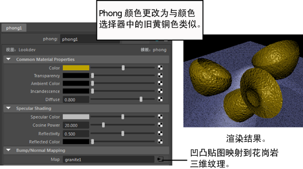
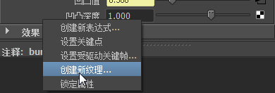
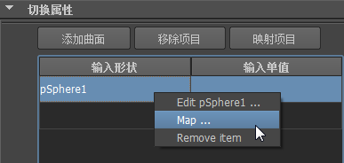
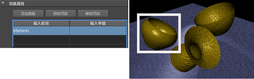
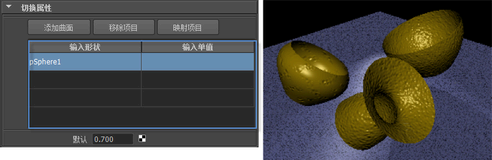
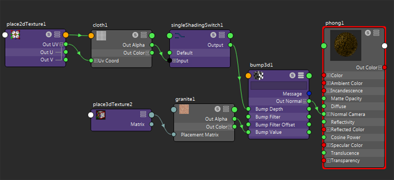

有关“单值切换”(Single Switch)工具的描述，请参见单值切换。
切换单个浮点属性，如“凹凸值”(Bump Value)或“凹凸深度”(Bump Depth)。
提示：
可以在 Viewport 2.0 中预览结果，或者在“渲染视图”(Render View)中渲染。
可以将“渲染视图”(Render View)、视口和“大纲视图”(Outliner)添加到此工作流的 Hypershade 窗口。从 Hypershade 中的“窗口”(Window)菜单中选择这些编辑器，然后将其停靠到 Hypershade。请参见在 Hypershade 中自定义布局。
使用“单值切换”(Single Switch)工具
- 创建材质并将其指定给场景中的所有对象。
- 将纹理映射到材质的“凹凸贴图”(Bump Mapping)属性。调整纹理的属性和 3D 放置（如有必要）。

提示：
如果纹理特性编辑器的“颜色平衡”(Color Balance)部分中的“Alpha 为亮度”(Alpha Is Luminance)处于启用状态，渲染结果将更平滑。默认情况下，“Alpha 为亮度”(Alpha Is Luminance)处于启用状态。
- 在“凹凸 3D”(Bump 3d)的“属性编辑器”(Attribute Editor)中，将光标悬停在“凹凸深度”(Bump Depth)属性上，然后在弹出菜单中的“创建新纹理”(Create New Texture)上单击鼠标右键。

- 从“创建渲染节点”(Create Render Node)窗口的“Maya > 工具”(Maya > Utilities)中选择“单值切换”(Single Switch)工具。
此时将显示“单值切换”(Single Switch)的特性编辑器。
- 打开大纲视图(Outliner)，然后单击鼠标中键选择要对其进行特定于对象的凹凸贴图处理的其中一个对象。将其拖到“切换属性”(Switch Attributes)部分的“输入形状”(In Shape)列。
- 单击显示在“输入形状”(In Shape)列中的名称，然后单击“映射项目”(Map Item)按钮（或在“输入单值”(In Single)列上单击鼠标右键，然后从弹出菜单中选择“贴图”(Map)）。

此时将显示“创建渲染节点”(Create Render Node)窗口。
- 选择另一个纹理。“切换属性”(Switch Attributes)
“输入单值”(In Single)列现在将显示新纹理。调整纹理的属性，以获得所需的外观。请注意，仅对象的其中一个凹凸贴图会因属性的调整而更改。

- 现在，在“单值切换”(Single Switch)的特性编辑器中更改默认属性。场景中其他对象上的凹凸贴图会根据输入的值进行相应的调整。

单击 Hypershade 工作区工具栏中的 以重新绘制着色器网络。
以下显示了 Hypershade 中的着色器图表：
